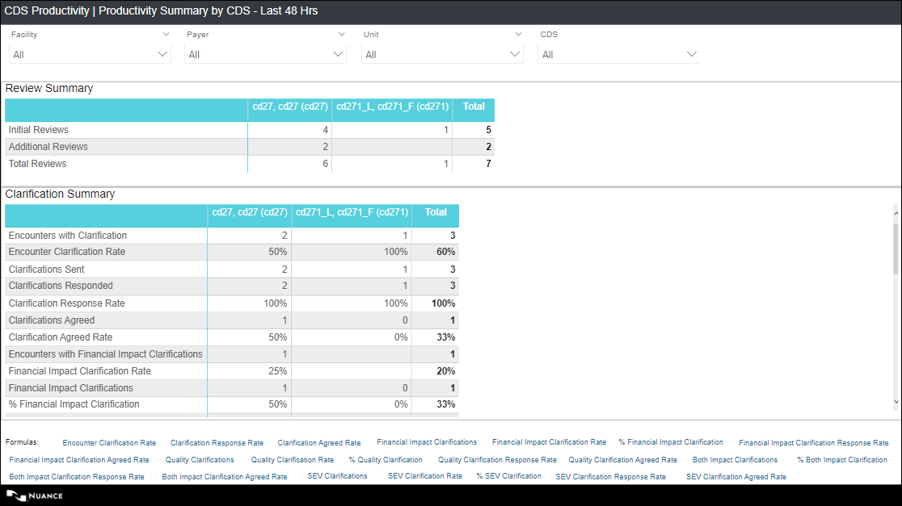

Productivity Summary by CDS - 48 Hours
- A CDS Manager can get up-to-date information on individual CDS productivity to take necessary actions and follow-ups with CDS to improve overall CDI Program performance.
- A CDS can view and analyze my productivity concurrently.
- How is the overall performance of the CDS team in terms of review activity?
- How is the performance of a specific CDS in terms of review activity?
- How is the overall performance of the CDS team in terms of clarification activity?
- How is the performance of a specific CDS in terms of clarification activity?
- Who are my top three CDS performers in terms of the review rate
Navigation: On the Analytics home page left side panel, navigate to .
- Review Summary tabular chart
- Clarification Summary tabular chart
On the top panel, you can select desired values for the slicers (refer Report slicers ) and the corresponding data gets filtered in charts.
For Global filters, refer Filters on all Pages.
For Footnotes, refer Footnotes.
Default Display: By default, the chart displays the data for the activity performed by the CDS in the last 48 hours (including today)

| Metric | Description |
|---|---|
| Initial Reviews |
Displays the count of encounters with an initial review date/time in the selected activity date range. NOTE: Initial Review Date/Time falls in the selected activity date range. Encounters with "Review Not Needed" encounter status are excluded from this metric calculations. |
| Additional Reviews |
Displays the count of additional reviews performed in the selected activity date range. NOTE: Additional Review Date/Time falls in the selected activity date range. Encounters with "Review Not Needed" encounter status are excluded from this metric calculations. Additional Review Types:
Activity Type 'Post-Discharge Review' is not considered in the Additional Reviews calculation. |
| Total Reviews | This column displays the count of total reviews performed in the
selected activity date range. Total Reviews = (Initial Reviews + Additional Reviews) NOTE: Review Date/Time (Initial Review and Additional Review dates) falls in the selected activity date range. Encounters with "Review Not Needed" encounter status are excluded from this metric calculations. |
| Column | Description |
|---|---|
| Encounters with Clarifications |
Displays the count of encounters with at least one clarification sent in the selected activity date range. NOTE: Clarifications with Status 'DELETED' or 'RETRACTED' are excluded from the count. Encounters with "Review Not Needed" encounter status are excluded from this metric calculations. Clarification Instance Sent Date falls in the selected activity date range. |
| Encounter Clarification Rate | Displays the percentage of reviewed encounters with at least one
clarification with the status other than DELETED or RETRACTED in the
selected activity date range. Encounter Clarification Rate= (The count of reviewed encounters with at least one clarification with the status other than DELETED or RETRACTED sent in the selected activity date range./ Count of Initial Reviews performed in the selected activity date range.) *100. Rounded off to 0 decimal places. E.g. 30%. NOTE: Initial Review Date/Time falls in the selected activity date range. Clarification Instance Sent Date falls in the selected activity date range. Encounters with "Review Not Needed" encounter status are excluded from this metric calculations. |
| Clarifications Sent |
Displays the count of clarifications with at-least one instance sent in the selected activity date range. NOTE: Clarification Instance Sent Date falls in the selected activity date range. (Start and End Date). Clarifications for "Review Not Needed" encounter status should not be considered for this metric calculation. Clarifications may or may not have a FINAL response. Clarifications with Status 'DELETED' or 'RETRACTED' are excluded from the count. |
| Clarifications Responded |
Displays the count of clarifications with at least one instance responded in the selected activity date range. NOTE: Instance Response Date falls in the selected activity date range. Clarification Instance may or may not have a FINAL response. Clarifications with response other than Pending, Retracted, or No Response are considered. Clarifications for "Review Not Needed" encounter status should not be considered for this metric calculation. Clarifications with Status 'DELETED' or 'RETRACTED' are excluded from the count. |
| Clarification Response Rate |
This column displays the percentage of sent clarifications responded in the selected activity date range. Clarification Response Rate= (The count of clarifications with at least one instance responded in the selected activity date range/ The count of clarification with at-least one instance sent in the selected activity date range) x 100. Rounded off to 0 decimal places. E.g. 80%. NOTE: Clarification Instance Sent Date falls in the selected activity date range. (Start and End Date). Clarifications with response other than Pending, Retracted, or No Response are considered. Clarifications may or may not have a FINAL response. Clarifications for "Review Not Needed" encounter status should not be considered for this metric calculation. Clarifications with Status 'DELETED' or 'RETRACTED' are excluded from the count. Instance Response Date falls in the selected activity date range. Clarification Instance may or may not have a FINAL response. |
| Clarifications Agreed | Displays the count of clarifications Agreed in the
selected activity date range. NOTE: Response Date/time of the Agreed instance falls in the selected activity date range. Clarification Instance may or may not have a FINAL response. Clarifications with Status 'DELETED' or 'RETRACTED' are excluded from the count. Clarifications for "Review Not Needed" encounter status should not be considered for this metric calculation. |
| Clarification Agreed Rate |
Displays the percentage of responded clarifications agreed in the selected activity date range. Clarification Agreed Rate = (The count of Clarifications Agreed in the selected activity date range (Response Date/time of the Agreed instance falls in the selected activity date range)/ The count of clarifications with at-least one instance responded in the selected activity date range) x 100. Rounded to 0 decimal places. E.g. 89% NOTE: Instance Response Date falls in the selected activity date range. Response Date/time of the Agreed instance falls in the selected activity date range. Clarification Instance may or may not have a FINAL response. Clarifications with response other than Pending, Retracted, or No Response are considered as responded. Clarifications with Status 'DELETED' or 'RETRACTED' are excluded from the count. Clarifications for "Review Not Needed" encounter status should not be considered for this metric calculation. |
| Clarification Alternative Specificity Diagnosis Rate |
Clarification Alternative Specificity Diagnosis Rate = (The count of Clarifications with response as Alternative Specificity Diagnosis in the last 48 hrs (Response Date/time of the Alternative Specificity Diagnosis instance falls in the last 48 hrs)/ The count of clarifications with at-least one instance responded in the last 48 hrs) x 100. Rounded to 0 decimal places. E.g. 89%. NOTE: Instance Response Date falls in the last 48 hrs. Response Date/time of the 'Alternative Specificity Diagnosis' instance falls in the last 48 hrs. Clarification Instance may or may not have a FINAL response. Clarifications with response other than Pending, Retracted, or No Response are considered as responded. Clarifications with Status 'DELETED' or 'RETRACTED' are excluded from the count. Clarifications for "Review Not Needed" encounter status should not be considered for this metric calculation. |
| Clarification Other Explanation Rate |
Displays the percentage of responded clarifications with response as Other Explanation Rate in the last 48 hrs. Clarification Alternative Specificity Diagnosis Rate = (The count of Clarifications with response as Other Explanation in the last 48 hrs (Response Date/time of the Other Explanation instance falls in the last 48 hrs)/ The count of clarifications with at least one instance responded in the last 48 hrs) x 100. Rounded to 0 decimal places. E.g. 89%. NOTE: Instance Response Date falls in the last 48 hrs. Response Date/time of the 'Other Explanation' instance falls in the last 48 hrs. Clarification Instance may or may not have a FINAL response. Clarifications with response other than Pending, Retracted, or No Response are considered as responded. Clarifications with Status 'DELETED' or 'RETRACTED' are excluded from the count. Clarifications for "Review Not Needed" encounter status should not be considered for this metric calculation. |
| Clarification Agreed Rate (Agreed & Alt DX) |
Displays the percentage of responded clarifications with response as Agreed or Alternative Specificity Diagnosis in the last 48 hrs. Clarification Agreed Rate (Agreed & Alt DX) = (The count of Clarifications with response as Agreed or Alternative Specificity Diagnosis in the last 48 hrs (Response Date/time of the Agreed or Alternative Specificity Diagnosis instance falls in the last 48 hrs)/ The count of clarifications with at least one instance responded in the last 48 hrs) x 100. Rounded to 0 decimal places. E.g. 89% NOTE: Instance Response Date falls in the last 48 hrs. Response Date/time of the Agreed or Alternative Specificity Diagnosis instance falls in the last 48 hrs. Clarification Instance may or may not have a FINAL response. Clarifications with response other than Pending, Retracted, or No Response are considered as responded. Clarifications with Status 'DELETED' or 'RETRACTED' are excluded from the count. Clarifications for "Review Not Needed" encounter status should not be considered for this metric calculation. |
| Clarification Agreed Rate (Agreed, Other Exp, Alt DX) |
This column displays the percentage of responded clarifications with response as Agreed or Other Explanation or Alternative Specificity Diagnosis in the last 48 hrs. Clarification Agreed Rate (Agreed, Other Exp, Alt DX) = (The count of Clarifications with response as Agreed or Other Explanation or Alternative Specificity Diagnosis in the last 48 hrs (Response Date/time of the Agreed or Other Explanation or Alternative Specificity Diagnosis instance falls in the last 48 hrs)/ The count of clarifications with at least one instance responded in the last 48 hrs) x 100. Rounded to 0 decimal places. E.g. 89% NOTE: Instance Response Date falls in the last 48 hrs. Response Date/time of the Agreed or Other Explanation or Alternative Specificity Diagnosis instance falls in the last 48 hrs. Clarification Instance may or may not have a FINAL response. Clarifications with response other than Pending, Retracted, or No Response are considered as responded. Clarifications with Status 'DELETED' or 'RETRACTED' are excluded from the count. Clarifications for "Review Not Needed" encounter status should not be considered for this metric calculation. |
| Encounters with Financial Impact Clarifications |
Displays the count of reviewed encounters with at least one Financial Impact clarification sent in the selected activity date range. NOTE: Clarification Instance Sent Date falls in the selected activity date range. Clarification with a standard or custom ‘Primary Type at Reconciliation’ defined as ‘Financial or BOTH’ in the admin configuration is a Financial Impact Clarification. Clarifications with Status 'DELETED' or 'RETRACTED' are excluded from the count. Encounters with "Review Not Needed" encounter status are excluded from this metric calculations. |
| Financial Impact Clarification Rate |
Displays the percentage of reviewed Encounters with at least one Financial Impact Clarifications sent in the selected activity date range. Financial Impact Clarification Rate = (Count of reviewed encounters with at least one Financial Impact clarification with the status other than DELETED or RETRACTED in the selected activity date range. / Count of encounters with an initial review date in the selected activity date range.) X 100 Rounded off to 0 decimal places. E.g. 30% NOTE: Clarification Instance Sent Date falls in the selected activity date range. Clarification with a standard or custom ‘Primary Type at Reconciliation’ defined as ‘Financial ’ in the admin configuration is a Financial Impact Clarification. Clarifications for "Review Not Needed" encounter status should not be considered for this metric calculation. |
| Financial Impact Clarifications |
Displays the count of Financial Impact clarification with at-least one instance sent in the selected activity date range. NOTE: Clarification Instance Sent Date falls in the selected activity date range. Clarification with a standard or custom ‘Primary Type at Reconciliation’ defined as ‘Financial’ in the admin configuration is a Financial Impact Clarification. Clarifications with Status 'DELETED' or 'RETRACTED' are excluded from the count. Clarifications for "Review Not Needed" encounter status should not be considered for this metric calculation. |
| % Financial Impact Clarification |
Displays the percentage of Financial Impact Clarifications sent in the selected activity date range. %Financial Impact Clarification = (The count of Financial Impact clarification with at-least one instance in the selected activity date range. / The count of clarifications with at-least one instance in the selected activity date range.) X100 Rounded off to 0 decimal places. E.g. 30% NOTE: Clarification Instance Sent Date falls in the selected activity date range. Clarification with a standard or custom ‘Primary Type at Reconciliation’ defined as ‘Financial ’ in the admin configuration is a Financial Impact Clarification. Clarifications with Status 'DELETED' or 'RETRACTED' are excluded from the count. Clarifications for "Review Not Needed" encounter status should not be considered for this metric calculation. |
| Financial Impact Clarifications Responded |
Displays the count of Financial Impact clarifications with at least one instance responded in the selected activity date range. NOTE: Instance Response Date falls in the selected activity date range. Clarification Instance may or may not have a FINAL response. Clarifications with response other than Pending, Retracted, or No Response are considered. Clarification with a standard or custom ‘Primary Type at Reconciliation’ defined as ‘Financial’ in the admin configuration is a Financial Impact Clarification. Clarifications with Status 'DELETED' or 'RETRACTED' are excluded from the count. Clarifications for "Review Not Needed" encounter status should not be considered for this metric calculation. |
| Financial Impact Clarification Response Rate |
Displays the percentage of sent Financial Impact clarifications responded in the selected activity date range. Financial Impact Clarification Response Rate= (The count of Financial Impact clarifications with at least one instance responded in the selected activity date range/ The count of Financial Impact clarifications with at-least one instance sent in the selected activity date range) x 100. Rounded to 0 decimal places. E.g. 89% NOTE: Instance Response Date falls in the selected activity date range. Clarification Instance Sent Date falls in the selected activity date range. Clarification Instance may or may not have a FINAL response. Clarifications with response other than Pending, Retracted, or No Response are considered. Clarification with a standard or custom ‘Primary Type at Reconciliation’ defined as ‘Financial’ in the admin configuration is a Financial Impact Clarification. Clarifications with Status 'DELETED' or 'RETRACTED' are excluded from the count. Clarifications for "Review Not Needed" encounter status should not be considered for this metric calculation. |
| Financial Impact Clarifications Agreed |
Displays the count of Financial Impact Clarifications agreed in the selected activity date range. NOTE: Response Date/time of the 'Agreed' instance falls in the selected activity date range. Clarification Instance may or may not have a FINAL response. Clarification with a standard or custom ‘Primary Type at Reconciliation’ defined as ‘Financial’ in the admin configuration is a Financial Impact Clarification. Clarifications with Status 'DELETED' or 'RETRACTED' are excluded from the count. Clarifications for "Review Not Needed" encounter status should not be considered for this metric calculation. |
| Financial Impact Clarification Agreed Rate |
This column displays the percentage of responded Financial Impact clarifications agreed in the selected activity date range. Financial Impact Clarification Agreed Rate = (The count of Financial Impact Clarifications agreed in the selected activity date range (Response Date/time of the 'Agreed' instance falls in the selected activity date range)/ the count of Financial Impact clarifications with at least one instance responded in the selected activity date range) x 100. Rounded to 0 decimal places. E.g. 89% NOTE: Instance Response Date falls in the selected activity date range. Response Date/time of the 'Agreed' instance falls in the selected activity date range. Clarification Instance may or may not have a FINAL response. Clarifications with response other than Pending, Retracted, or No Response are considered as responded. Clarification with a standard or custom ‘Primary Type at Reconciliation’ defined as ‘Financial’ in the admin configuration is a Financial Impact Clarification. Clarifications with Status 'DELETED' or 'RETRACTED' are excluded from the count. Clarifications for "Review Not Needed" encounter status should not be considered for this metric calculation. |
| Encounters with Quality Clarifications |
Displays the count of reviewed encounters with at least one quality Impact clarification sent in the selected activity date range. NOTE: Clarification Instance Sent Date falls in the selected activity date range. Clarification with a standard or custom ‘Primary Type at Reconciliation’ defined as ‘Quality or BOTH’ in the admin configuration are considered. Clarifications with Status 'DELETED' or 'RETRACTED' are excluded from the count. Encounters with "Review Not Needed" encounter status are excluded from this metric calculations. |
| Quality Clarification Rate |
Displays the percentage of reviewed Encounters with Quality Impact Clarifications sent in the selected activity date range. Quality Clarification Rate = (Count of reviewed encounters with at least one Quality Impact clarification with the status other than DELETED or RETRACTED sent in the selected activity date range. / Count of encounters with an initial review date in the selected activity date range.) X 100. Rounded off to 0 decimal places. E.g. 30% NOTE: Clarification Instance Sent Date falls in the selected activity date range. Initial Review Date falls in the selected activity date range. Clarification with a standard or custom ‘Primary Type at Reconciliation’ defined as ‘Quality or BOTH’ in the admin configuration are considered. Clarifications with Status 'DELETED' or 'RETRACTED' are excluded from the count. Encounters with "Review Not Needed" encounter status are excluded from this metric calculations. |
| Quality Clarifications |
Displays the count of Quality Impact clarification with at-least one instance sent in the selected activity date range. NOTE: Clarification Instance Sent Date falls in the selected activity date range. Clarification with a standard or custom ‘Primary Type at Reconciliation’ defined as ‘Quality’ in the admin configuration is a Quality Impact Clarification. Clarifications with Status 'DELETED' or 'RETRACTED' are excluded from the count. Clarifications for "Review Not Needed" encounter status should not be considered for this metric calculation. |
| % Quality Clarification |
Displays the percentage of Quality Impact Clarifications sent in the selected activity date range. % Quality Clarification = (The count of Quality Impact clarification with at-least one instance in the selected activity date range. / The count of clarifications with at-least one instance in the selected activity date range.) X100 Rounded off to 0 decimal places. E.g. 30% NOTE: Clarification Instance Sent Date falls in the selected activity date range. Clarification with a standard or custom ‘Primary Type at Reconciliation’ defined as ‘Quality’ in the admin configuration is a Quality Impact Clarification. Clarifications with Status 'DELETED' or 'RETRACTED' are excluded from the count. Clarifications for "Review Not Needed" encounter status should not be considered for this metric calculation. |
| Quality Clarifications Responded |
Displays the count of Quality Impact clarifications with at least one instance responded in the selected activity date range. NOTE: Instance Response Date falls in the selected activity date range. Clarification Instance may or may not have a FINAL response. Clarifications with response other than Pending, Retracted, or No Response are considered. Clarification with a standard or custom ‘Primary Type at Reconciliation’ defined as ‘Quality’ in the admin configuration is a Quality Impact Clarification. Clarifications with Status 'DELETED' or 'RETRACTED' are excluded from the count. Clarifications for "Review Not Needed" encounter status should not be considered for this metric calculation. |
| Quality Clarification Response Rate |
Displays the percentage of sent Quality Impact clarifications responded in the selected activity date range. Quality Clarification Response Rate= (The count of Quality Impact clarifications with at least one instance responded in the selected activity date range/ The count of Quality Impact clarifications with at-least one instance sent in the selected activity date range) x 100. Rounded to 0 decimal places. E.g. 89% NOTE: Instance Response Date falls in the selected activity date range. Clarification Instance Sent Date falls in the selected activity date range. Clarification Instance may or may not have a FINAL response. Clarifications with response other than Pending, Retracted, or No Response are considered. Clarification with a standard or custom ‘Primary Type at Reconciliation’ defined as ‘Quality ’ in the admin configuration is a Quality Impact Clarification. Clarifications with Status 'DELETED' or 'RETRACTED' are excluded from the count. Clarifications for "Review Not Needed" encounter status should not be considered for this metric calculation. |
| Quality Clarifications Agreed |
Displays the count of Quality Impact Clarifications Agreed in the selected activity date range. NOTE: Response Date/time of the Agreed instance falls in the selected activity date range. Clarification Instance may or may not have a FINAL response. Clarification with a standard or custom ‘Primary Type at Reconciliation’ defined as ‘Quality ’ in the admin configuration is a Quality Impact Clarification. Clarifications with Status 'DELETED' or 'RETRACTED' are excluded from the count. Clarifications for "Review Not Needed" encounter status should not be considered for this metric calculation. |
| Quality Clarification Agreed Rate |
Displays the percentage of responded Quality Impact clarifications agreed in the selected activity date range. Quality Clarification Agreed Rate = (The count of Quality Impact Clarifications Agreed in the selected activity date range (Response Date/time of the Agreed instance falls in the selected activity date range)/ the count of Quality Impact clarifications with at least one instance responded in the selected activity date range) x 100. Rounded to 0 decimal places. E.g. 89%. NOTE: Instance Response Date falls in the selected activity date range. Response Date/time of the 'Agreed' instance falls in the selected activity date range. Clarification Instance may or may not have a FINAL response. Clarifications with response other than Pending, Retracted, or No Response are considered as responded. Clarification with a standard or custom ‘Primary Type at Reconciliation’ defined as ‘Quality ’ in the admin configuration is a Quality Impact Clarification. Clarifications with Status 'DELETED' or 'RETRACTED' are excluded from the count. Clarifications for "Review Not Needed" encounter status should not be considered for this metric calculation. |
| Both Impact Clarifications |
Displays the count of Both Impact clarification with at-least one instance sent in the selected activity date range. NOTE: Clarification Instance Sent Date falls in the selected activity date range. Clarification with a standard or custom ‘Primary Type at Reconciliation’ defined as ‘Financial and Quality’ in the admin configuration is considered as BOTH. Clarifications with Status 'DELETED' or 'RETRACTED' are excluded from the count. Clarifications for "Review Not Needed" encounter status should not be considered for this metric calculation. |
| % Both Impact Clarification |
Displays the percentage of Both Impact Clarifications sent in the selected activity date range. % Both Impact Clarification = (The count of Both Impact clarification with at-least one instance in the selected activity date range. / The count of clarifications with at-least one instance in the selected activity date range.) X100. Rounded off to 0 decimal places. E.g. 30%. NOTE: Clarification Instance Sent Date falls in the selected activity date range. Clarification with a standard or custom ‘Primary Type at Reconciliation’ defined as ‘Financial and Quality’ in the admin configuration is considered as BOTH. Clarifications with Status 'DELETED' or 'RETRACTED' are excluded from the count. Clarifications for "Review Not Needed" encounter status should not be considered for this metric calculation. |
| Both Impact Clarifications Responded |
Displays the count of Both Impact clarifications with at least one instance responded in the selected activity date range. NOTE: Instance Response Date falls in the selected activity date range. Clarification Instance may or may not have a FINAL response. Clarifications with response other than Pending, Retracted, or No Response are considered. Clarification with a standard or custom ‘Primary Type at Reconciliation’ defined as ‘Financial and Quality’ in the admin configuration is considered as BOTH. Clarifications with Status 'DELETED' or 'RETRACTED' are excluded from the count. Clarifications for "Review Not Needed" encounter status should not be considered for this metric calculation. |
| Both Impact Clarification Response Rate |
Displays the percentage of sent Both Impact clarifications responded in the selected activity date range. Both Impact Clarification Response Rate= (The count of Both Impact clarifications with at least one instance responded in the selected activity date range/ The count of Both Impact clarifications with at-least one instance sent in the selected activity date range) x 100. Rounded to 0 decimal places. E.g. 89%. NOTE: Instance Response Date falls in the selected activity date range. Clarification Instance Sent Date falls in the selected activity date range. Clarification Instance may or may not have a FINAL response. Clarifications with response other than Pending, Retracted, or No Response are considered. Clarification with a standard or custom ‘Primary Type at Reconciliation’ defined as ‘Financial and Quality’ in the admin configuration is considered as BOTH. Clarifications with Status 'DELETED' or 'RETRACTED' are excluded from the count. Clarifications for "Review Not Needed" encounter status should not be considered for this metric calculation. |
| Both Impact Clarifications Agreed |
Displays the count of Both Impact Clarifications Agreed in the selected activity date range. NOTE: Response Date/time of the Agreed instance falls in the selected activity date range. Clarification Instance may or may not have a FINAL response. Clarification with a standard or custom ‘Primary Type at Reconciliation’ defined as ‘Financial and Quality’ in the admin configuration is considered as BOTH. Clarifications with Status 'DELETED' or 'RETRACTED' are excluded from the count. Clarifications for "Review Not Needed" encounter status should not be considered for this metric calculation. |
| Both Impact Clarification Agreed Rate |
Displays the percentage of responded Both Impact clarifications agreed in the selected activity date range. Both Impact Clarification Agreed Rate = (The count of Both Impact Clarifications Agreed in the selected activity date range (Response Date/time of the Agreed instance falls in the selected activity date range)/ The count of Both Impact clarifications with at least one instance responded in the selected activity date range) x 100 Rounded to 0 decimal places. E.g. 89% NOTE: Instance Response Date falls in the selected activity date range. Response Date/time of the 'Agreed' instance falls in the selected activity date range. Clarification Instance may or may not have a FINAL response. Clarifications with response other than Pending, Retracted, or No Response are considered as responded. Clarification with a standard or custom ‘Primary Type at Reconciliation’ defined as ‘Financial and Quality’ in the admin configuration is considered as BOTH. Clarifications with Status 'DELETED' or 'RETRACTED' are excluded from the count. Clarifications for "Review Not Needed" encounter status should not be considered for this metric calculation. |
| Encounters with SEV Clarifications |
Displays the count of reviewed encounters with at least one SEV Impact clarification sent in the selected activity date range. NOTE: Clarification Instance Sent Date falls in the selected activity date range. Clarification with a standard or custom ‘Primary Type at Reconciliation’ as SEV are considered. Clarifications with Status 'DELETED' or 'RETRACTED' are excluded from the count. Encounters with "Review Not Needed" encounter status are excluded from this metric calculations. |
| SEV Clarification Rate |
Displays the percentage of reviewed Encounters with SEV Impact Clarifications sent in the selected activity date range. SEV Clarification Rate = (Count of reviewed encounters with at least one SEV Impact clarification with the status other than DELETED or RETRACTED sent in the selected activity date range. / Count of encounters with an initial review date in the selected activity date range.) X 100 Rounded off to 0 decimal places. E.g. 30% NOTE: Clarification Instance Sent Date falls in the selected activity date range. Initial Review Date falls in the selected activity date range. Clarification with a standard or custom ‘Primary Type at Reconciliation’ as SEV are considered. Clarifications with Status 'DELETED' or 'RETRACTED' are excluded from the count. Encounters with "Review Not Needed" encounter status are excluded from this metric calculations. |
| SEV Clarifications |
Displays the count of SEV Impact clarification with at-least one instance sent in the selected activity date range. NOTE: Clarification Instance Sent Date falls in the selected activity date range. Clarification with a standard or custom ‘Primary Type at Reconciliation’ as SEV are considered. Clarifications with Status 'DELETED' or 'RETRACTED' are excluded from the count. Clarifications for "Review Not Needed" encounter status should not be considered for this metric calculation. |
| % SEV Clarification |
Displays the percentage of SEV Impact Clarifications sent in the selected activity date range. % SEV Clarification = (The count of SEV Impact clarification with at-least one instance in the selected activity date range. / The count of clarifications with at-least one instance in the selected activity date range.) X100. Rounded off to 0 decimal places. E.g. 30%. NOTE: Clarification Instance Sent Date falls in the selected activity date range. Clarification with a standard or custom ‘Primary Type at Reconciliation’ as SEV are considered. Clarifications with Status 'DELETED' or 'RETRACTED' are excluded from the count. Clarifications for "Review Not Needed" encounter status should not be considered for this metric calculation. |
| SEV Clarifications Responded |
Displays the count of SEV Impact clarifications with at least one instance responded in the selected activity date range. NOTE: Instance Response Date falls in the selected activity date range. Clarification Instance may or may not have a FINAL response. Clarifications with response other than Pending, Retracted, or No Response are considered. Clarification with a standard or custom ‘Primary Type at Reconciliation’ as SEV are considered. Clarifications with Status 'DELETED' or 'RETRACTED' are excluded from the count. Clarifications for "Review Not Needed" encounter status should not be considered for this metric calculation. |
| SEV Clarification Response Rate |
Displays the percentage of sent SEV Impact clarifications responded in the selected activity date range. SEV Clarification Response Rate= (The count of SEV Impact clarifications with at least one instance responded in the selected activity date range/ The count of SEV Impact clarifications with at-least one instance sent in the selected activity date range) x 100. Rounded to 0 decimal places. E.g. 89% NOTE: Instance Response Date falls in the selected activity date range. Clarification Instance Sent Date falls in the selected activity date range. Clarification Instance may or may not have a FINAL response. Clarifications with response other than Pending, Retracted, or No Response are considered. Clarification with a standard or custom ‘Primary Type at Reconciliation’ as SEV are considered. Clarifications with Status 'DELETED' or 'RETRACTED' are excluded from the count. Clarifications for "Review Not Needed" encounter status should not be considered for this metric calculation. |
| SEV Clarifications Agreed |
This column displays the count of SEV Impact Clarifications Agreed in the selected activity date range. NOTE: Response Date/time of the Agreed instance falls in the selected activity date range. Clarification Instance may or may not have a FINAL response. Clarification with a standard or custom ‘Primary Type at Reconciliation’ as SEV are considered. Clarifications with Status 'DELETED' or 'RETRACTED' are excluded from the count. Clarifications for "Review Not Needed" encounter status should not be considered for this metric calculation. |
| SEV Clarification Agreed Rate |
Displays the percentage of responded SEV Impact clarifications agreed in the selected activity date range. SEV Clarification Agreed Rate = (The count of SEV Impact Clarifications Agreed in the selected activity date range (Response Date/time of the Agreed instance falls in the selected activity date range)/ the count of SEV Impact clarifications with at least one instance responded in the selected activity date range) x 100. Rounded to 0 decimal places. E.g. 89%. NOTE: Instance Response Date falls in the selected activity date range. Response Date/time of the 'Agreed' instance falls in the selected activity date range. Clarification Instance may or may not have a FINAL response. Clarifications with response other than Pending, Retracted, or No Response are considered as responded. Clarification with a standard or custom ‘Primary Type at Reconciliation’ as SEV are considered. Clarifications with Status 'DELETED' or 'RETRACTED' are excluded from the count. Clarifications for "Review Not Needed" encounter status should not be considered for this metric calculation. |
| Filter | Description |
|---|---|
| Activity Date | Default: Last 48 hours including today's date. |
| Facility |
|
| Payer |
|
| Unit |
|
| CDS |
|
| Filter | Description |
|---|---|
| Patient Type | Displays the patient type, Inpatient or Outpatient. By default, Inpatient is selected. |
| Visit Type |
|
| Encounter Status |
|
| Admit Service |
|
| Label | Text on hover |
|---|---|
| Encounter Clarification Rate |
(Count of reviewed encounters with at least one clarification with the status other than REMOVED or RETRACTED sent in the selected activity date range / Count of Initial Reviews performed in the selected activity date range) X 100. E.g. 33%. |
| Clarification Response Rate | (Count of clarifications with at least one instance responded in the selected activity date range/Count of clarification with at least one instance sent in the selected activity date range) x 100. E.g. 80% |
| Clarification Agreed Rate | (Count of Clarifications with at least one agreed response in the selected activity date range /Count of clarifications with at least one instance responded in the selected activity date range) x 100. E.g. 90% |
| Clarification Alternative Specificity Diagnosis Rate | (Count of clarifications with at least one response as Alternative Specificity Diagnosis in the last 48 hrs / Count of clarifications with at least one instance responded in the last 48 Hrs)x100. E.g. 40%. |
| Clarification Other Explanation Rate | (Count of clarifications with at least one response as Other Explanation in the last 48 hrs / count of clarifications with at least one instance responded in the last 48 Hrs)x100. E.g. 37%. |
| Clarification Agreed Rate (Agreed & Alt DX) | (Count of clarifications with at least one response as Agreed or Alternative Diagnosis in the last 48 hrs / count of clarifications with at least one instance responded in the last 48 Hrs)x100. E.g. 90%. |
| Clarification Agreed Rate (Agreed, Other Exp, Alt DX) | (Count of clarifications with at least one response as Agreed or Alternative Diagnosis or Other Explanation in the last 48 hrs / count of clarifications with at least one instance responded in the last 48 hrs)x100. E.g. 81%. |
| Financial Impact Clarifications | Financial Impact Clarifications: Clarifications with standard or custom ‘Primary Type at Reconciliation’ defined as ‘Financial’ in the admin configuration. |
| Financial Impact Clarification Rate |
(Count of reviewed encounters with at least one Financial Impact clarification (excludes REMOVED or RETRACTED) sent in the selected activity date range/Count of encounters with an initial review date in the selected activity date range) x 100. E.g. 56%. |
| % Financial Impact Clarification | (Count of Financial Impact clarification with at least one instance in the selected activity date range/Count of clarifications with at least one instance in the selected activity date range) x 100. E.g. 75%. |
| Financial Impact Clarification Response Rate | Count of Financial Impact clarifications with at least one instance responded in the selected activity date range/Count of Financial Impact clarifications with at least one instance sent in the selected activity date range) x 100. E.g. 75%. |
| Financial Impact Clarification Agreed Rate | (Count of Financial Impact Clarifications agreed in the selected activity date range/ Count of Financial Impact clarifications with at least one instance responded in the selected activity date range) x 100. E.g. 90%. |
| Quality Clarifications | Quality Clarifications: Clarifications with standard or custom ‘Primary Type at Reconciliation’ defined as ‘Quality’ in the admin configuration. |
| Quality Clarification Rate | (Count of reviewed encounters with at least one Quality Impact clarification (excludes REMOVED or RETRACTED) sent in the selected activity date range/Count of encounters with an initial review date in the selected activity date range) x 100. E.g. 56%. |
| % Quality Clarification | (Count of Quality Impact clarification with at least one instance in the selected activity date range/Count of clarifications with at least one instance in the selected activity date range) x 100. E.g. 44%. |
| Quality Clarification Response Rate | (Count of Quality Impact clarifications with at least one instance responded in the selected activity date range/Count of Quality Impact clarifications with at least one instance sent in the selected activity date range) x 100. E.g. 88%. |
| Quality Clarification Agreed Rate | (Count of Quality Impact Clarifications agreed in the selected activity date range/Count of Quality Impact clarifications with at least one instance responded in the selected activity date range) x 100. E.g. 100%. |
| Both Impact Clarifications | Both Impact Clarifications: Clarifications with standard or custom ‘Primary Type at Reconciliation’ defined as 'Financial' and ‘Quality’ in the admin configuration. |
| % Both Impact Clarification | (Count of Both Impact clarification with at least one instance in the selected activity date range/Count of clarifications with at least one instance in the selected activity date range) x 100. E.g. 31%. |
| Both Impact Clarification Response Rate | (Count of Both Impact clarifications with at least one instance responded in the selected activity date range/Count of Both Impact clarifications with at least one instance sent in the selected activity date range) x 100. E.g. 91%. |
| Both Impact Clarification Agreed Rate | (Count of Both Impact Clarifications agreed in the selected activity date range/Count of Both Impact clarifications with at least one instance responded in the selected activity date range) x 100. E.g. 95%. |
| SEV Clarifications | SEV Clarifications: Clarifications with ‘Primary Type at Reconciliation’ as SEV. |
| SEV Clarification Rate | (Count of reviewed encounters with at least one SEV Impact clarification (excludes REMOVED or RETRACTED) sent in the selected activity date range/Count of encounters with an initial review date in the selected activity date range) x 100. E.g. 31%. |
| % SEV Clarification | (Count of SEV Impact clarification with at least one instance in the selected activity date range/Count of clarifications with at least one instance in the selected activity date range) x 100. E.g. 21%. |
| SEV Clarification Response Rate | (Count of SEV Impact clarifications with at least one instance responded in the selected activity date range/Count of SEV Impact clarifications with at least one instance sent in the selected activity date range) x 100. E.g. 70%. |
| SEV Clarification Agreed Rate | (Count of SEV Impact Clarifications agreed in the selected activity date range /Count of SEV Impact clarifications with at least one instance responded in the selected activity date range) x 100. E.g. 98%. |